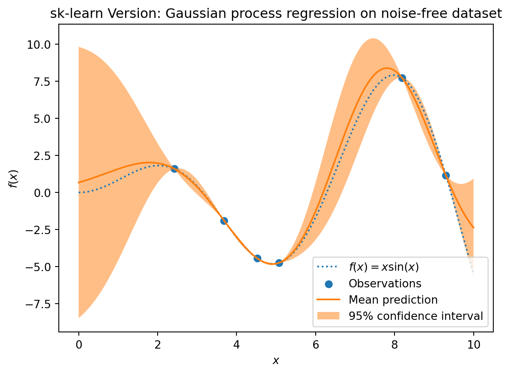
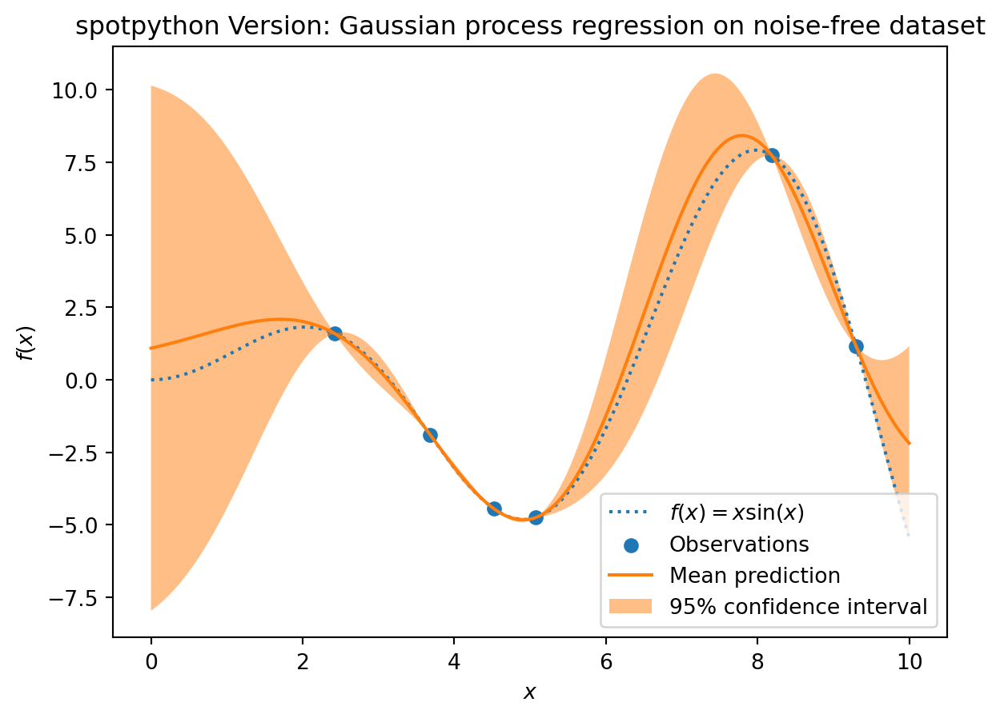
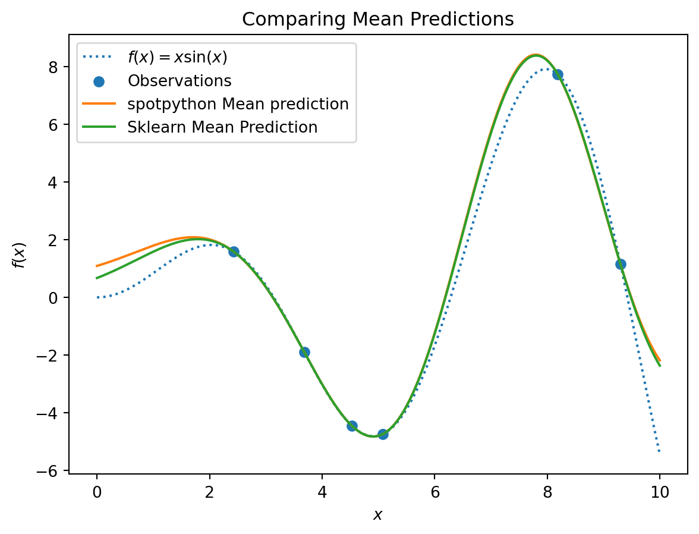

import numpy as np
from math import inf
from spotPython.fun.objectivefunctions import analytical
from spotPython.design.spacefilling import spacefilling
from spotPython.spot import spot
from spotPython.build.kriging import Kriging
from scipy.optimize import shgo
from scipy.optimize import direct
from scipy.optimize import differential_evolution
import matplotlib.pyplot as plt
import math as m
from sklearn.gaussian_process import GaussianProcessRegressor
from sklearn.gaussian_process.kernels import RBF11 Sequential Parameter Optimization: Gaussian Process Models
This chapter analyzes differences between the Kriging implementation in spotPython and the GaussianProcessRegressor in scikit-learn.
11.1 Gaussian Processes Regression: Basic Introductory scikit-learn Example
This is the example from scikit-learn: https://scikit-learn.org/stable/auto_examples/gaussian_process/plot_gpr_noisy_targets.html
After fitting our model, we see that the hyperparameters of the kernel have been optimized.
Now, we will use our kernel to compute the mean prediction of the full dataset and plot the 95% confidence interval.
11.1.1 Train and Test Data
X = np.linspace(start=0, stop=10, num=1_000).reshape(-1, 1)
y = np.squeeze(X * np.sin(X))
rng = np.random.RandomState(1)
training_indices = rng.choice(np.arange(y.size), size=6, replace=False)
X_train, y_train = X[training_indices], y[training_indices]11.1.2 Building the Surrogate With Sklearn
- The model building with
sklearnconsisits of three steps:- Instantiating the model, then
- fitting the model (using
fit), and - making predictions (using
predict)
kernel = 1 * RBF(length_scale=1.0, length_scale_bounds=(1e-2, 1e2))
gaussian_process = GaussianProcessRegressor(kernel=kernel, n_restarts_optimizer=9)
gaussian_process.fit(X_train, y_train)
mean_prediction, std_prediction = gaussian_process.predict(X, return_std=True)11.1.3 Plotting the SklearnModel
plt.plot(X, y, label=r"$f(x) = x \sin(x)$", linestyle="dotted")
plt.scatter(X_train, y_train, label="Observations")
plt.plot(X, mean_prediction, label="Mean prediction")
plt.fill_between(
X.ravel(),
mean_prediction - 1.96 * std_prediction,
mean_prediction + 1.96 * std_prediction,
alpha=0.5,
label=r"95% confidence interval",
)
plt.legend()
plt.xlabel("$x$")
plt.ylabel("$f(x)$")
_ = plt.title("sk-learn Version: Gaussian process regression on noise-free dataset")
11.1.4 The spotPython Version
- The
spotPythonversion is very similar:- Instantiating the model, then
- fitting the model and
- making predictions (using
predict).
S = Kriging(name='kriging', seed=123, log_level=50, cod_type="norm")
S.fit(X_train, y_train)
S_mean_prediction, S_std_prediction, S_ei = S.predict(X, return_val="all")plt.plot(X, y, label=r"$f(x) = x \sin(x)$", linestyle="dotted")
plt.scatter(X_train, y_train, label="Observations")
plt.plot(X, S_mean_prediction, label="Mean prediction")
plt.fill_between(
X.ravel(),
S_mean_prediction - 1.96 * S_std_prediction,
S_mean_prediction + 1.96 * S_std_prediction,
alpha=0.5,
label=r"95% confidence interval",
)
plt.legend()
plt.xlabel("$x$")
plt.ylabel("$f(x)$")
_ = plt.title("spotPython Version: Gaussian process regression on noise-free dataset")
11.1.5 Visualizing the Differences Between the spotPython and the sklearn Model Fits
plt.plot(X, y, label=r"$f(x) = x \sin(x)$", linestyle="dotted")
plt.scatter(X_train, y_train, label="Observations")
plt.plot(X, S_mean_prediction, label="spotPython Mean prediction")
plt.plot(X, mean_prediction, label="Sklearn Mean Prediction")
plt.legend()
plt.xlabel("$x$")
plt.ylabel("$f(x)$")
_ = plt.title("Comparing Mean Predictions")
11.2 Exercises
11.2.1 Schonlau Example Function
- The Schonlau Example Function is based on sample points only (there is no analytical function description available):
X = np.linspace(start=0, stop=13, num=1_000).reshape(-1, 1)
X_train = np.array([1., 2., 3., 4., 12.]).reshape(-1,1)
y_train = np.array([0., -1.75, -2, -0.5, 5.])- Describe the function.
- Compare the two models that were build using the
spotPythonand thesklearnsurrogate. - Note: Since there is no analytical function available, you might be interested in adding some points and describe the effects.
11.2.2 Forrester Example Function
The Forrester Example Function is defined as follows:
f(x) = (6x- 2)^2 sin(12x-4) for x in [0,1].Data points are generated as follows:
from spotPython.utils.init import fun_control_init
X = np.linspace(start=-0.5, stop=1.5, num=1_000).reshape(-1, 1)
X_train = np.array([0.0, 0.175, 0.225, 0.3, 0.35, 0.375, 0.5,1]).reshape(-1,1)
fun = analytical().fun_forrester
fun_control = fun_control_init(sigma = 0.1)
y = fun(X, fun_control=fun_control)
y_train = fun(X_train, fun_control=fun_control)- Describe the function.
- Compare the two models that were build using the
spotPythonand thesklearnsurrogate. - Note: Modify the noise level (
"sigma"), e.g., use a value of0.2, and compare the two models.
fun_control = fun_control_init(sigma = 0.2)11.2.3 fun_runge Function (1-dim)
The Runge function is defined as follows:
f(x) = 1/ (1 + sum(x_i))^2Data points are generated as follows:
gen = spacefilling(1)
rng = np.random.RandomState(1)
lower = np.array([-10])
upper = np.array([10])
fun = analytical().fun_runge
fun_control = fun_control_init(sigma = 0.025)
X_train = gen.scipy_lhd(10, lower=lower, upper = upper).reshape(-1,1)
y_train = fun(X, fun_control=fun_control)
X = np.linspace(start=-13, stop=13, num=1000).reshape(-1, 1)
y = fun(X, fun_control=fun_control)- Describe the function.
- Compare the two models that were build using the
spotPythonand thesklearnsurrogate. - Note: Modify the noise level (
"sigma"), e.g., use a value of0.05, and compare the two models.
fun_control = fun_control_init(sigma = 0.5)11.2.4 fun_cubed (1-dim)
The Cubed function is defined as follows:
np.sum(X[i]** 3)Data points are generated as follows:
gen = spacefilling(1)
rng = np.random.RandomState(1)
fun_control = fun_control_init(sigma = 0.025,
lower = np.array([-10]),
upper = np.array([10]))
fun = analytical().fun_cubed
X_train = gen.scipy_lhd(10, lower=lower, upper = upper).reshape(-1,1)
y_train = fun(X, fun_control=fun_control)
X = np.linspace(start=-13, stop=13, num=1000).reshape(-1, 1)
y = fun(X, fun_control=fun_control)- Describe the function.
- Compare the two models that were build using the
spotPythonand thesklearnsurrogate. - Note: Modify the noise level (
"sigma"), e.g., use a value of0.05, and compare the two models.
fun_control = fun_control_init(sigma = 0.025)11.2.5 The Effect of Noise
How does the behavior of the spotPython fit changes when the argument noise is set to True, i.e.,
S = Kriging(name='kriging', seed=123, n_theta=1, noise=True)
is used?